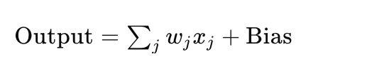
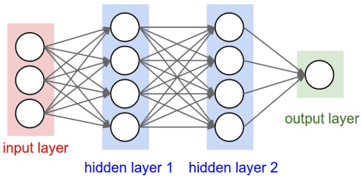

PyTorch ニューラルネットワークの基礎
ニューラルネットワークは、人間の脳が情報を処理する仕組みを模倣した計算モデルであり、多数の相互接続されたノード（ニューロン）から構成され、これらのノードは階層的に配置されています。
ニューラルネットワークの強力な点は、大量のデータから複雑なパターンや特徴を自動的に学習でき、人間が特徴抽出器を設計する必要がないことです。
深層学習の発展に伴い、ニューラルネットワークは多くの複雑な問題を解決するための重要な技術となっています。
ニューロン（Neuron）
ニューロンはニューラルネットワークの基本単位であり、入力信号を受け取り、重み付き和を計算してバイアス（bias）を加え、活性化関数で処理して出力を生成します。
ニューロンの重みとバイアスは、ネットワークの学習プロセスで調整されるパラメータです。
入力と出力:
- 入力（Input）：入力はネットワークの開始点であり、画像のピクセル値やテキストの単語ベクトルなどの特徴データです。
- 出力（Output）：出力はネットワークの終点であり、分類タスクにおけるクラスラベルなど、モデルの予測結果を表します。
ニューロンは複数の入力（例: x1, x2, ..., xn）を受け取り、入力の加重和が活性化閾値（activation potential）を超えると、バイナリ出力を生成します。

ニューロンの出力は、入力の加重和にバイアス（bias）を加えたものと見なせます。ニューロンの数学的表現:

ここで、wjは重み、xjは入力、そしてBiasはバイアス項です。
層（Layer）
入力層と出力層の間の層は隠れ層と呼ばれ、層間の接続密度と種類によってネットワークの構成が決まります。
ニューラルネットワークは複数の層から構成され、以下が含まれます:
- 入力層（Input Layer）：元の入力データを受け取ります。
- 隠れ層（Hidden Layer）：入力データを処理します。複数の隠れ層を持つことができます。
- 出力層（Output Layer）：最終的な出力結果を生成します。
典型的なニューラルネットワークのアーキテクチャ:

デモ図:
フィードフォワードニューラルネットワーク（Feedforward Neural Network, FNN）
フィードフォワードニューラルネットワーク（Feedforward Neural Network, FNN）は、ニューラルネットワークのファミリーにおける基本単位です。
フィードフォワードニューラルネットワークの特徴は、データが入力層から始まり、1つ以上の隠れ層を経て出力層に到達するまで、ループやフィードバックがないことです。

フィードフォワードニューラルネットワークの基本構造:
-
入力層:データがネットワークに入る入り口です。入力層の各ノードは1つの入力特徴を表します。
隠れ層:データの非線形特徴を捉えるための1つ以上の層です。各隠れ層は複数のニューロンで構成され、各ニューロンは活性化関数を通じて非線形性を高めます。
出力層:ネットワークの予測結果を出力します。ノード数は問題の種類に関係し、例えば分類問題の出力ノード数はクラス数と同じです。
結合の重みとバイアス:各ニューロンの入力は重みで加重和され、バイアス値が加算され、活性化関数を通じて渡されます。
リカレントニューラルネットワーク（Recurrent Neural Network, RNN）
リカレントニューラルネットワーク（Recurrent Neural Network, RNN）は、シーケンスデータを専門に処理するニューラルネットワークの一種で、入力データ内の時間的または順序的な情報の依存関係を捕捉できます。
RNNの特別な点は、「記憶能力」を持ち、ネットワークの隠れ状態に以前のタイムステップの情報を保存できることです。
リカレントニューラルネットワークは、時間とともに変化するデータパターンを処理するために使用されます。
RNNでは、同じ層が入力パラメータを受け取り、指定されたニューラルネットワーク内で出力パラメータを表示するために使用されます。

PyTorchは、ニューラルネットワークを構築およびトレーニングするための強力なツールを提供します。
ニューラルネットワークはPyTorchではtorch.nnモジュールによって実装されます。
torch.nnモジュールは、さまざまなネットワーク層（全結合層、畳み込み層など）、損失関数、オプティマイザを提供し、ニューラルネットワークの構築とトレーニングをより便利にします。

PyTorchでニューラルネットワークを構築するには、通常nn.Moduleクラスを継承する必要があります。
nn.Moduleはすべてのニューラルネットワークモジュールの基底クラスであり、以下の2つの部分を定義する必要があります:
__init__()：ネットワーク層を定義します。forward()：データのフォワード伝播プロセスを定義します。
シンプルな全結合ニューラルネットワーク（Fully Connected Network）:
例
import torch.nn as nn
# シンプルなニューラルネットワークモデルを定義
class SimpleNN(nn.Module):
def __init__(self):
super(SimpleNN, self).__init__()
# 入力層から隠れ層への全結合層を定義
self.fc1 = nn.Linear(2, 2) # 2つの特徴を入力し、2つの特徴を出力
# 隠れ層から出力層への全結合層を定義
self.fc2 = nn.Linear(2, 1) # 2つの特徴を入力し、1つの予測値を出力
def forward(self, x):
# フォワード伝播プロセス
x = torch.relu(self.fc1(x)) # ReLU活性化関数を使用
x = self.fc2(x) # 出力層
return x
# モデルインスタンスを作成
model = SimpleNN()
# モデルを出力
print(model)
出力結果は次のとおりです:
SimpleNN( (fc1): Linear(in_features=2, out_features=2, bias=True) (fc2): Linear(in_features=2, out_features=1, bias=True) )
PyTorchは多くの一般的なニューラルネットワーク層を提供しています。以下はその一部です:
nn.Linear(in_features, out_features)：全結合層。入力in_features個の特徴、出力out_features個の特徴。nn.Conv2d(in_channels, out_channels, kernel_size)：2D畳み込み層。画像処理に使用されます。nn.MaxPool2d(kernel_size)：2D最大プーリング層。次元削減に使用されます。nn.ReLU()：ReLU活性化関数。隠れ層でよく使用されます。nn.Softmax(dim)：Softmax活性化関数。通常出力層で使用され、多クラス分類問題に適しています。
活性化関数（Activation Function）
活性化関数は、ニューロンを活性化するかどうかを決定します。これらは非線形関数であり、ニューラルネットワークがより複雑なタスクを学習し実行できるようにします。一般的な活性化関数は次のとおりです:
- Sigmoid: 二値分類問題に使用され、出力値は0と1の間です。
- Tanh: 出力値は-1と1の間で、出力層の前でよく使用されます。
- ReLU（Rectified Linear Unit）: 現在最も人気のある活性化関数の1つで、次のように定義されます
f(x) = max(0, x)、勾配消失問題の解決に役立ちます。 - Softmax: 多クラス分類問題の出力層でよく使用され、出力を確率分布に変換します。
例
# ReLU活性化
output = F.relu(input_tensor)
# Sigmoid活性化
output = torch.sigmoid(input_tensor)
# Tanh活性化
output = torch.tanh(input_tensor)
損失関数（Loss Function）
損失関数は、モデルの予測値と真の値との差を測定するために使用されます。
一般的な損失関数は次のとおりです:
- 平均二乗誤差（MSELoss）：回帰問題でよく使用され、出力と目標値の二乗差を計算します。
- 交差エントロピー損失（CrossEntropyLoss）：分類問題でよく使用され、出力と真のラベル間の交差エントロピーを計算します。
- BCEWithLogitsLoss：二値分類問題用で、Sigmoid活性化とバイナリ交差エントロピー損失を組み合わせたものです。
例
criterion = nn.MSELoss()
# 交差エントロピー損失
criterion = nn.CrossEntropyLoss()
# 二値分類の交差エントロピー損失
criterion = nn.BCEWithLogitsLoss()
オプティマイザ（Optimizer）
オプティマイザは、トレーニング中にネットワークの重みとバイアスを更新する役割を担います。
一般的なオプティマイザは次のとおりです:
- SGD（確率的勾配降下法）
- Adam（適応モーメント推定）
- RMSprop（二乗平均平方根伝播）
例
# SGDオプティマイザを使用
optimizer = optim.SGD(model.parameters(), lr=0.01)
# Adamオプティマイザを使用
optimizer = optim.Adam(model.parameters(), lr=0.001)
トレーニングプロセス（Training Process）
ニューラルネットワークのトレーニングには以下の手順が含まれます：
- データの準備：〜を通じて
DataLoaderデータを読み込みます。 - 損失関数とオプティマイザを定義する。
- 順伝播：モデルの出力を計算します。
- 損失を計算する：ターゲットと比較して損失値を取得します。
- 逆伝播：〜を通じて
loss.backward()勾配を計算します。 - パラメータを更新する：〜を通じて
optimizer.step()モデルのパラメータを更新します。 - 上記の手順を繰り返す、所定のトレーニングエポック数に達するまで。
例
# トレーニングデータの例
X = torch.randn(10, 2) # 10個のサンプル、各サンプルは2つの特徴を持つ
Y = torch.randn(10, 1) # 10個のターゲットラベル
# トレーニングプロセス
for epoch in range(100): # 100エポックのトレーニング
model.train() # モデルをトレーニングモードに設定
optimizer.zero_grad() # 勾配をクリア
output = model(X) # 順伝播
loss = criterion(output, Y) # 損失を計算
loss.backward() # 逆伝播
optimizer.step() # 重みを更新
if (epoch + 1) % 10 == 0: # 10エポックごとに損失を出力
print(f'Epoch [{epoch + 1}/100], Loss: {loss.item():.4f}')
テストと評価
トレーニング完了後、モデルをテストして評価する必要があります。
一般的な手順は次のとおりです：
- テストセットの損失を計算する：モデルの未見データに対する性能をテストします。
- 精度（Accuracy）を計算する：分類問題では、正しく予測された割合を計算します。
例
model.eval() # モデルを評価モードに設定
with torch.no_grad(): # 評価中は勾配計算を無効にする
output = model(X_test)
loss = criterion(output, Y_test)
print(f'Test Loss: {loss.item():.4f}')
ニューラルネットワークの種類
- フィードフォワードニューラルネットワーク（Feedforward Neural Networks）：データは入力層から出力層へ一方向に流れ、フィードバック接続はありません。
- 畳み込みニューラルネットワーク（Convolutional Neural Networks, CNNs）：画像処理に適しており、畳み込み層を使用して空間的特徴を抽出します。
- リカレントニューラルネットワーク（Recurrent Neural Networks, RNNs）：時系列分析や自然言語処理などのシーケンスデータに適しており、情報のフィードバックループを可能にします。
- 長短期記憶ネットワーク（Long Short-Term Memory, LSTM）：長期的な依存関係を学習できる特別なRNNです。
torch.nn リファレンス
以下は PyTorch で最も一般的に使用されるtorch.nn関数とクラスです：
モデル定義の基本
| 関数 | 説明 | 例 |
|---|---|---|
| nn.Module | すべてのニューラルネットワークモジュールの基底クラス | class Net(nn.Module): ... |
| nn.Sequential | 各層を順番に実行するシーケンシャルコンテナ | nn.Sequential(conv, relu, pool) |
| nn.ModuleList | サブモジュールをリストに格納する | self.layers = nn.ModuleList([...]) |
| nn.Parameter | 学習可能なパラメータテンソルを作成する | self.w = nn.Parameter(torch.randn(n)) |
畳み込み層
| 関数 | 説明 | 例 |
|---|---|---|
| nn.Conv1d | 1次元畳み込み（テキスト、オーディオ） | nn.Conv1d(3, 64, 3) |
| nn.Conv2d | 2次元畳み込み（画像） | nn.Conv2d(3, 64, 3, padding=1) |
| nn.Conv3d | 3次元畳み込み（動画） | nn.Conv3d(3, 64, 3) |
| nn.ConvTranspose2d | 転置畳み込み（デコーダー、アップサンプリング） | nn.ConvTranspose2d(64, 3, 2, stride=2) |
プーリング層
| 関数 | 説明 | 例 |
|---|---|---|
| nn.MaxPool2d | 2次元最大プーリング | nn.MaxPool2d(2, 2) |
| nn.AvgPool2d | 2次元平均プーリング | nn.AvgPool2d(2, 2) |
| nn.AdaptiveAvgPool2d | 適応的平均プーリング（固定出力サイズ） | nn.AdaptiveAvgPool2d((1, 1)) |
| nn.AdaptiveMaxPool2d | 適応的最大プーリング（固定出力サイズ） | nn.AdaptiveMaxPool2d((1, 1)) |
線形層
| 関数 | 説明 | 例 |
|---|---|---|
| nn.Linear | 全結合層（線形変換） | nn.Linear(128, 64) |
| nn.Bilinear | 双線形層 | nn.Bilinear(128, 64, 32) |
| 関数 | 説明 | 例 |
| nn.ReLU | ReLU 活性化関数、f(x) = max(0, x) | nn.ReLU() |
| nn.GELU | ガウス誤差線形ユニット（Transformer のデフォルト） | nn.GELU() |
| nn.SiLU | Swish 活性化関数 | nn.SiLU() |
| nn.Tanh | 双曲線正接（タンジェント） | nn.Tanh() |
| nn.Sigmoid | Sigmoid 活性化関数 | nn.Sigmoid() |
| nn.Softmax | Softmax 活性化関数 | nn.Softmax(dim=1) |
| nn.LogSoftmax | Log Softmax（数値的に安定） | nn.LogSoftmax(dim=1) |
| nn.LeakyReLU | LeakyReLU、負の値に小さな勾配を許可 | nn.LeakyReLU(0.01) |
| nn.ELU | 指数線形ユニット | nn.ELU() |
正規化層
| 関数 | 説明 | 例 |
|---|---|---|
| nn.BatchNorm2d | 2次元バッチ正規化（畳み込みネットワークで一般的） | nn.BatchNorm2d(64) |
| nn.LayerNorm | レイヤー正規化（Transformer で一般的） | nn.LayerNorm(512) |
| nn.GroupNorm | グループ正規化（ResNet などで一般的） | nn.GroupNorm(4, 64) |
| nn.InstanceNorm2d | インスタンス正規化（スタイル変換で一般的） | nn.InstanceNorm2d(64) |
リカレント層
| 関数 | 説明 | 例 |
|---|---|---|
| nn.LSTM | LSTM 長短期記憶層 | nn.LSTM(256, 512, 2) |
| nn.GRU | GRU ゲート付きリカレントユニット層 | nn.GRU(256, 512, 2) |
| nn.RNN | シンプルな RNN 層 | nn.RNN(256, 512, 2) |
Transformer 層
| 関数 | 説明 | 例 |
|---|---|---|
| nn.Transformer | 完全な Transformer モデル | nn.Transformer(d_model=512, nhead=8) |
| nn.TransformerEncoder | Transformer エンコーダー | nn.TransformerEncoder(layer, num_layers=6) |
| nn.TransformerDecoder | Transformer デコーダー | nn.TransformerDecoder(layer, num_layers=6) |
| nn.TransformerEncoderLayer | Transformer エンコーダー層 | nn.TransformerEncoderLayer(512, 8) |
| nn.MultiheadAttention | マルチヘッドアテンション機構 | nn.MultiheadAttention(512, 8) |
埋め込み層
| 関数 | 説明 | 例 |
|---|---|---|
| nn.Embedding | 埋め込み層（単語をベクトルにマッピング） | nn.Embedding(10000, 256) |
| nn.EmbeddingBag | EmbeddingBag（複数の埋め込みを集約） | nn.EmbeddingBag(10000, 256) |
Dropout 層
| 関数 | 説明 | 例 |
|---|---|---|
| nn.Dropout | ランダム破棄（過学習の防止） | nn.Dropout(0.5) |
| nn.Dropout2d | 2D Dropout（特徴マップ単位で破棄） | nn.Dropout2d(0.5) |
損失関数
| 関数 | 説明 | 例 |
|---|---|---|
| nn.CrossEntropyLoss | 交差エントロピー損失（多クラス分類） | nn.CrossEntropyLoss() |
| nn.MSELoss | 平均二乗誤差損失（回帰） | nn.MSELoss() |
| nn.L1Loss | L1 損失（MAE） | nn.L1Loss() |
| nn.BCEWithLogitsLoss | Sigmoid 付きバイナリ交差エントロピー | nn.BCEWithLogitsLoss() |
| nn.HuberLoss | Huber 損失（ロバスト回帰） | nn.HuberLoss() |
| nn.NLLLoss | 負の対数尤度損失 | nn.NLLLoss() |
ファンクショナル関数（nn.functional）
| 関数 | 説明 | 例 |
|---|---|---|
F.relu |
ReLU 活性化 | F.relu(x) |
F.gelu |
GELU 活性化 | F.gelu(x) |
F.sigmoid |
Sigmoid 活性化 | F.sigmoid(x) |
F.softmax |
Softmax 活性化 | F.softmax(x, dim=1) |
F.dropout |
Dropout 操作 | F.dropout(x, 0.5, training) |
F.conv2d |
2次元畳み込み | F.conv2d(x, weight, bias) |
F.linear |
線形変換 | F.linear(x, weight, bias) |
F.cross_entropy |
交差エントロピー損失 | F.cross_entropy(logits, targets) |
F.mse_loss |
平均二乗誤差損失 | F.mse_loss(pred, target) |
F.interpolate |
補間（アップ/ダウンサンプリング） | F.interpolate(x, scale_factor=2) |
F.embedding |
埋め込み操作 | F.embedding(indices, weight) |
ユーティリティ関数（nn.init）
| 関数 | 説明 | 例 |
|---|---|---|
nn.init.xavier_uniform_ |
Xavier 一様初期化 | nn.init.xavier_uniform_(module.weight) |
nn.init.xavier_normal_ |
Xavier 正規初期化 | nn.init.xavier_normal_(module.weight) |
nn.init.kaiming_uniform_ |
Kaiming 一様初期化（ReLU に適する） | nn.init.kaiming_uniform_(module.weight) |
nn.init.kaiming_normal_ |
Kaiming 正規初期化（ReLU に適する） | nn.init.kaiming_normal_(module.weight) |
nn.init.zeros_ |
ゼロ初期化 | nn.init.zeros_(module.bias) |
nn.init.normal_ |
正規初期化 | nn.init.normal_(module.weight, 0, 0.01) |
ユーティリティ関数（nn.utils）
| 関数 | 説明 | 例 |
|---|---|---|
nn.utils.clip_grad_norm_ |
勾配ノルムのクリッピング（勾配爆発の防止） | nn.utils.clip_grad_norm_(model.parameters(), 1.0) |
nn.utils.weight_norm |
重み正規化 | nn.utils.weight_norm(module, 'weight') |
nn.utils.spectral_norm |
スペクトル正規化（GAN で一般的） | nn.utils.spectral_norm(module, 'weight') |
nn.utils.rnn.pack_padded_sequence |
可変長シーケンスのパッキング | pack_padded_sequence(x, lengths) |
nn.utils.rnn.pad_packed_sequence |
シーケンスのアンパッキング | pad_packed_sequence(packed) |
クリックしてノートを共有
ノートは本記事の内容の拡張である必要があります！
記事投稿は、こちらをクリック
登録招待コードの取得方法
ノートを共有する前にログインが必要です！
登録招待コードの取得方法